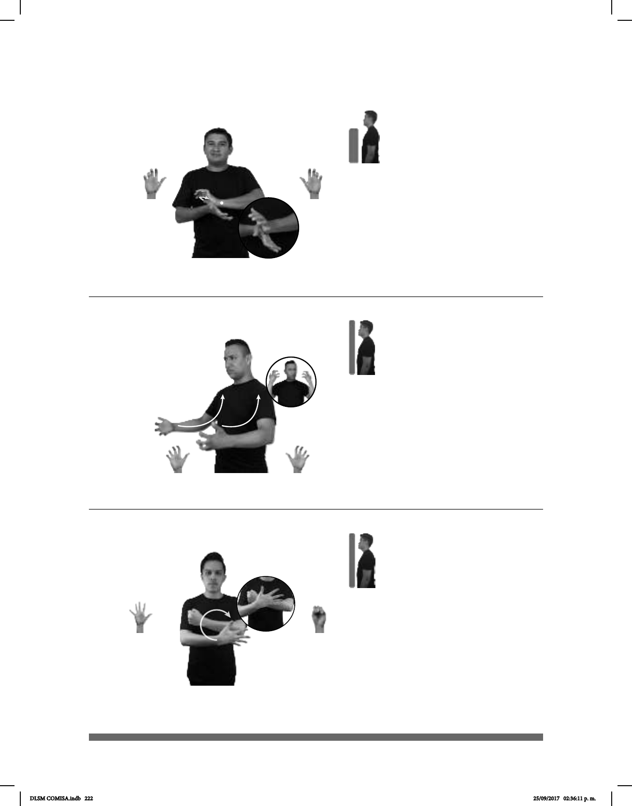

222
Seña: SB
MD y MB 5.11
MD palma hacia abajo. MB
palma hacia arriba.
A la altura del pecho. MD
sobre MB.
MD la muñeca gira sin
cambiar la orientación de la mano.
1. v. tr. Considerar o
tratar a alguien como inferior por motivos
étnicos, sociales, políticos, etc. o, por
alguna de estas causas, darle un
tratamiento legal o económico
particular y desventajoso. 2. sust. f. Acto
de discriminar.
Seña: SS
5.18
Las palmas inician hacia
el centro y terminan hacia adentro.
Del pecho al cuello.
Los brazos se mueven
formando un arco.
Ceño fruncido.
v. intr. prnl. Experimentar
enojo.
(5-G 88)
1
2
(5-G 89) Enfurecerse – Enojarse
CUIDAR++ DISCRIMINAR PROHIBIR
Ten cuidado, discriminar está prohibido.
_______________neg
pro-TÚ ENOJAR NO POR-FAVOR
No te enojes, por favor.
Seña: SB
MD 5.1, MB S.1
MD y MB palmas hacia
adentro.
MD y MB a la altura del
pecho.
El brazo de MD se mueve
formando círculos delante de MB.
sust. m. Arma defensiva
usada en los combates cuerpo a cuerpo,
consistente en una pieza grande y plana
de metal, madera, cuero, etc, que se
lleva en un brazo y sirve para
protegerse de los golpes dados con una
espada, lanza, mazo, etc.
(5-G 90)
Escudo
____muy
BANDERA MÉXICO ESCUDO CL: GARRA con CL: B
colocar-escudo
ESE BONITO
El escudo de la bandera de México es muy bonito.
DLSM COMISA.indb 222 25/09/2017 02:36:11 p. m.